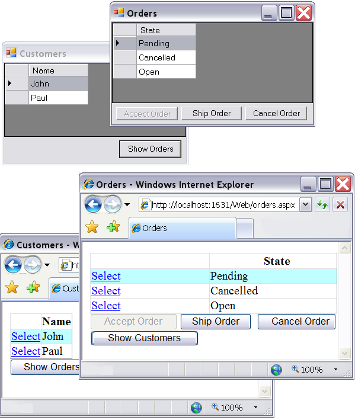
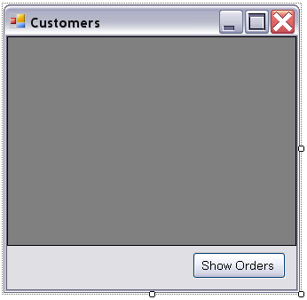
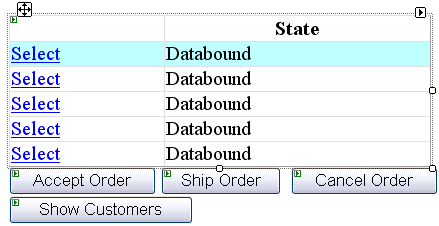

Getting started with MVC# framework
The source code of this example can be found under "Examples\Basics\" subfolder
of the MVC# framework root folder. The framework itself can be downloaded from www.MVCSharp.org/download.aspx.
Introduction
The Model
Application logic
Main Task
Customers Controller
Orders Controller
Presentation
Customers view (Win)
Orders view (Win)
Customers view (Web)
Orders view (Web)
Customers view (Silverlight)
Orders view (Silverlight)
Starting the application
Summary
Introduction
Architectural patterns such as Model-View-Controller are gaining more and more popularity
nowdays. The reason is simple: they improve applications' design and raise their
maintainability by splitting applications into three layers with distinct responsibilities.
However incorporating such patterns into an application requires some effort - the
fact that may discourage developers from using MVC and similar approaches. Fortunately
a number of frameworks exist, which minimize the overhead of using architectural
patterns such as MVC. One of such frameworks is MVC#.
It assists developers in using the Model-View-Presenter pattern (an evolution of
MVC) by taking on itself all routine work, allowing to develop 3-tier MVP applications
with ease.
In this article we will demonstrate how to build a Model-View-Presenter application
with the help of MVC# Framework. Our first example application will be intended
for managing customers and their orders. It will consist of two views: first one
displays
customers and has a button to switch to the second view. The second view lists
orders for the selected customer and has buttons to operate on the order selected:
“Accept”, “Cancel” and “Ship”. We will implement views for Windows, Web and Silverlight
presentation
platforms, revealing how MVC# allows to target the same application to different
presentation mechanisms.
Before reading the article be sure to get acquainted with the Model-View-Presenter
essentials. A gentle introduction to MVP and MVC can be found
here. Also note that the code listings throughout the article may omit minor
details for simplicity sake. For exact code see the example sources.

The Model
Firstly we are going to create the model part of the MVP triad. It will consist
of two classes: Customer and Order. While the Customer class just holds a list of
orders and a static list of all customers, the Order is a little more complicated
having three operations.
namespace MVCSharp.Examples.Basics.Model
{
public class Customer
{
public static readonly List<Customer> AllCustomers = new List<Customer>();
public readonly List<Order> Orders = new List<Order>();
private string name;
public Customer(string name)
{
this.name = name;
}
public string Name
{
get { return name; }
}
}
}
namespace MVCSharp.Examples.Basics.Model
{
public class Order
{
private OrderState state = OrderState.Open;
public OrderState State
{
get { return state; }
}
public void Accept()
{
if (State == OrderState.Open)
state = OrderState.Pending;
}
public void Ship()
{
if (State == OrderState.Pending)
state = OrderState.Shipped;
}
public void Cancel()
{
if (State != OrderState.Shipped)
state = OrderState.Cancelled;
}
}
}
Application Logic
Main Task
Every MVC# application consists of one or more tasks. A task is an independent set
of actions which accomplish some job, typically representing a use case for the system.
Tasks may be "Book ticket", "Calculate taxes" and others. In our example application
there will be a single task for managing customers and their orders. Each task consists
of a number of views which a user traverses to complete the task. Our example task
will have two views: "Customers" and "Orders".
In order to describe a task we should declare its class. For each view a public
constant field, initialized with the view name, should be added to the task class.
According to the Model-View-Presenter pattern a view is never alone, it always exists
in pair with its controller (the view-controller pair is referred to as interaction
point), that is why for each view we also specify its controller type with the [InteractionPoint]
attribute.
public class MainTask
{
[InteractionPoint(typeof(CustomersController), Orders)]
public const string Customers = "Customers";
[InteractionPoint(typeof(OrdersController), Customers)]
public const string Orders = "Orders";
}
Besides the controller type, [InteractionPoint] attribute specifies permitted navigation
targets. Thus above we have stated both Customers->Orders and Orders->Customers
transitions possible.
In MVC# all tasks should implement the ITask interface. Though this interface is rather simple
and can be implemented manually, the MVC# framework already comes with a basic
implementation TaskBase. We will use it as a base for our MainTask class.
public class MainTask : TaskBase
{
...
}
A part of the ITask interface is the OnStart operation. It should be implemented
to define actions performed on task start. In our case we want the customers view
to be activated when the task starts:
public class MainTask : TaskBase
...
public override void OnStart(object param)
{
Navigator.NavigateDirectly(Customers);
}
NavigateDirectly method activates a view regardless of the current view (which is
null at the beginning) and of possible navigation routes.
A task should be a container for global logic, used across the entire task and
consumed by more than one controller. In our example such global meaning will have
the currently selected customer. As we will see later it will be used by both controllers.
That is why we will include a CurrentCustomer property to the MainTask. Moreover
the setter for this property will generate a CurrentCustomerChanged event:
public class MainTask : TaskBase
...
private Customer currentCustomer;
public event EventHandler CurrentCustomerChanged;
public Customer CurrentCustomer
{
get { return currentCustomer; }
set
{
currentCustomer = value;
if (CurrentCustomerChanged != null)
CurrentCustomerChanged(this, EventArgs.Empty);
}
}
Now we are ready to deal with the rest of the application logic placed in the
controller classes. Let us start with the CustomersController class.
Customers Controller
Generally controllers in the Model-View-Presenter paradigm handle the application
flow: they process UI events using the Model tier classes when necessary, and decide
what to display in the UI. And so the CustomersController should do. First of all
it should configure the view with the customers list and the current customer. This
should be done during the initialization phase when
the controller is linked to its view:
namespace MVCSharp.Examples.Basics.ApplicationLogic
{
public class CustomersController : ControllerBase
{
public override IView View
{
get { return base.View; }
set
{
base.View = value;
(View as ICustomersView).SetCustomersList(Customer.AllCustomers);
(View as ICustomersView).CurrentCustomer =
(Task as MainTask).CurrentCustomer;
}
}
}
}
Note that controllers in MVC# should conform to the IController interface. But as it is with
the ITask interface MVC# provides a common IController implementation ControllerBase
which we are using.
Next, CustomersController should process UI events. To be exact it should handle the “Show Orders” command from the UI and
process the change of the customer currently selected in the customers form:
public class CustomersController : ControllerBase
{
...
public void ShowOrders()
{
Task.Navigator.Navigate(MainTask.Orders);
}
public void CurrentCustomerChanged()
{
(Task as MainTask).CurrentCustomer = (View as ICustomersView)
.CurrentCustomer;
}
}
ICustomersView is the interface that the customers view should implement:
namespace MVCSharp.Examples.Basics.ApplicationLogic
{
public interface ICustomersView
{
void SetCustomersList(List<Customer> customers);
Customer CurrentCustomer
{
get;
set;
}
}
}
Orders Controller
The logic of displaying orders is quite simple: we should track the change of current
customer and display its orders:
public class OrdersController : ControllerBase
{
public override ITask Task
{
get { return base.Task; }
set
{
base.Task = value;
(Task as MainTask).CurrentCustomerChanged +=
CurrentCustomerChanged;
}
}
private void CurrentCustomerChanged(object sender, EventArgs e)
{
(View as IOrdersView).SetOrdersList((Task as MainTask)
.CurrentCustomer.Orders);
}
}
In the above code we first subscribe to the MainTask.CurrentCustomerChanged event
as soon as the controller is linked to the task object. Then we just handle the
customer change event by passing the corresponding orders to the view.
The next three methods represent the "Accept", "Ship", and "Cancel" operations on
the currently selected order:
public class OrdersController : ControllerBase
{
…
public void AcceptOrder()
{
(View as IOrdersView).CurrentOrder.Accept();
UpdateView();
}
public void ShipOrder()
{
(View as IOrdersView).CurrentOrder.Ship();
UpdateView();
}
public void CancelOrder()
{
(View as IOrdersView).CurrentOrder.Cancel();
UpdateView();
}
}
We might demand the view to disable certain operations depending on the current
order state. For example one cannot ship an order before it is accepted. UpdateView
is the method that analyzes the current order state and tells the view to enable/disable
certain operations:
public class OrdersController : ControllerBase
…
private void UpdateView()
{
if ((View as IOrdersView).CurrentOrder == null) return;
OrderState os = (View as IOrdersView).CurrentOrder.State;
(View as IOrdersView).SetOperationsEnabling(
os == OrderState.Open, os == OrderState.Pending,
(os == OrderState.Open) || (os == OrderState.Pending));
}
The OrdersController class should also have a CurrentOrderChanged operation for
the view to notify the controller when a user clicks on another order:
public class OrdersController : ControllerBase
…
public void CurrentOrderChanged()
{
UpdateView();
}
Presentation
The presentation layer consists of view classes. All views in MVC# should implement
the IView interface. In addition view classes should conform to particular interfaces
dictated by the application logic layer. In our example such interfaces are ICustomersView
and IOrdersView. Depending on the presentation platform chosen, view classes should
inherit an appropriate base view class (either Windows form, or Web form, or Silverlight
user control). We will design views for all three platforms supported at the moment
(Windows, Web and Silverlight) and will start with Windows form
views.
Customers view (Win)
First let us create the customers view for the Windows Forms presentation mechanism.
As mentioned above it should be a subclass of the Windows Form class and should
implement the IView interface. To reduce the amount of manual work we will make
it inherit from the WinFormView class - a simple Form subclass implementing the
IView interface.
namespace MVCSharp.Examples.Basics.Presentation
{
public partial class CustomersForm : WinFormView
{
public CustomersForm()
{
InitializeComponent();
}
}
}
Let us place a GridView component and a button on the form:

In order for the customers controller to talk to its view the latter should implement
the ICustomersView interface:
public partial class CustomersForm : WinFormView, ICustomersView
...
public void SetCustomersList(List<Customer> customers)
{
customersGridView.DataSource = customers;
}
public Customer CurrentCustomer
{
get { return customersGridView.CurrentRow == null ? null :
customersGridView.CurrentRow.DataBoundItem as Customer;}
set { customersGridView.CurrentCell = customersGridView.Rows[
(customersGridView.DataSource as IList).IndexOf(value)].Cells[0];}
}
According to the MVP pattern views receive the user actions and then pass control
to the controller. In our case the customers view should handle the change of current
customer in the grid and the “Show Orders” button click:
public partial class CustomersForm : WinFormView, ICustomersView
...
private void customersGridView_CurrentCellChanged(object sender,
EventArgs e)
{
(Controller as CustomersController).CurrentCustomerChanged();
}
private void showOrdersButton_Click(object sender, EventArgs e)
{
(Controller as CustomersController).ShowOrders();
}
The last thing here is to point the MVC# framework that the above view class describes
the “Customers” view in the MainTask task. This is done with the View attribute:
[View(typeof(MainTask), MainTask.Customers)]
public partial class CustomersForm : WinFormView, ICustomersView
…
Orders view (Win)
Similarly let us design the OrdersView form. It will contain a grid and three buttons:

In the same manner as it was with the CustomersView, the OrdersView class should
inherit from the WinFormView class and implement the IOrdersView interface for the framework and the controller to interact
with it. It should also have a [View] attribute to indicate its belonging to the
main task as the "Orders" view.
[View(typeof(MainTask), MainTask.Orders)]
public partial class OrdersForm : WinFormView, IOrdersView
{
...
public void SetOrdersList(List<Order> orders)
{
ordersGridView.DataSource = orders;
}
public Order CurrentOrder
{
get { return ordersGridView.CurrentRow.DataBoundItem as Order; }
}
public void SetOperationsEnabling(bool acceptIsEnabled,
bool shipIsEnabled, bool cancelIsEnabled)
{
acceptOrderBtn.Enabled = acceptIsEnabled;
shipOrderBtn.Enabled = shipIsEnabled;
cancelOrderBtn.Enabled = cancelIsEnabled;
}
The following code shows how the OrdersForm handles user actions and delegates processing
to the controller:
public partial class OrdersForm : Form, IView, IOrdersView
{
...
private void ordersGridView_CurrentCellChanged(object sender,
EventArgs e)
{
(Controller as OrdersController).CurrentOrderChanged();
}
private void acceptOrderBtn_Click(object sender, EventArgs e)
{
(Controller as OrdersController).AcceptOrder();
}
private void shipOrderBtn_Click(object sender, EventArgs e)
{
(Controller as OrdersController).ShipOrder();
}
private void cancelOrderBtn_Click(object sender, EventArgs e)
{
(Controller as OrdersController).CancelOrder();
}
Customers view (Web)
In Web environment the views design will be very similar to that in Windows. Views
will inherit from the WebFormView class and will contain a grid and buttons on their surface:

ICustomersView implementation will be identical to that in Windows environment:
public partial class _Default : WebFormView, ICustomersView
{
public void SetCustomersList(List<Customer> customers)
{
CustomersGridView.DataSource = customers;
}
public Customer CurrentCustomer
{
get { return (CustomersGridView.DataSource as List<Customer>)
[CustomersGridView.SelectedIndex]; }
set { CustomersGridView.SelectedIndex =
(CustomersGridView.DataSource as IList).IndexOf(value); }
}
}
Button click and grid row selection event handler will look the same way too:
public partial class _Default : WebFormView, ICustomersView
...
protected void ShowOrdersButton_Click(object sender, EventArgs e)
{
(Controller as CustomersController).ShowOrders();
}
protected void CustomersGridView_SelectedIndexChanged(object sender,
EventArgs e)
{
(Controller as CustomersController).CurrentCustomerChanged();
}
Orders view (Web)
Here we do not list code for the orders Web form class as it is very similar to
its Windows analogue above. If desired, a reader may look into the full sources
of the example. Here is how the orders Web view looks in the designer surface:

To associate the designed Web forms with the "Customers" and "Orders" views of the main task we
use a slightly different technique (instead of [View] attributes):
we add [WebformsView] attributes to a placeholder class inside the Global.asax file:
<!------------------------ Global.asax file -------------------->
<script runat="server">
[WebformsView(typeof(MainTask), MainTask.Customers, "Default.aspx")]
[WebformsView(typeof(MainTask), MainTask.Orders, "Orders.aspx")]
class ViewDescriptions { }
</script>
Customers view (Silverlight)
Views under Silverlight platform should inherit the UserControlView class. Thus,
firstly we should create a new user control with the following XAML markup:
<mvc:UserControlView
xmlns:my=
"clr-namespace:System.Windows.Controls;assembly=System.Windows.Controls.Data"
x:Class="MVCSharp.Examples.Basics.Presentation.Silverlight.CustomersPage"
xmlns="http://schemas.microsoft.com/client/2007"
xmlns:x="http://schemas.microsoft.com/winfx/2006/xaml"
xmlns:mvc="clr-namespace:MVCSharp.Silverlight;assembly=MVCSharpSL">
<Grid>
</Grid>
</mvc:UserControlView>
Next, we are adding the customers data grid and the "Show Orders" button:
<mvc:UserControlView
... >
<Grid Background="White" Margin="5" HorizontalAlignment="Left">
<Grid.RowDefinitions>
<RowDefinition Height="Auto"/>
<RowDefinition Height="Auto"/>
</Grid.RowDefinitions>
<my:DataGrid x:Name="CustomersGrid" MaxWidth="400" MinHeight="100"
Grid.Row="0" SelectionMode="Single"
SelectionChanged="CustomersGrid_CurrentCellChanged"/>
<Button Width="75" Height="25" HorizontalAlignment="Right" Grid.Row="1"
Content="Show Orders" Margin="3" Click="Button_Click"/>
</Grid>
Finally, we should add the event handlers to the code-behind
CustomersPage.xaml.cs file, and make the view class implement the ICustomersView
interface. The corresponding code looks almost identical to that for Winforms
and Web platforms:
[View(typeof(MainTask), MainTask.Customers)]
public partial class CustomersPage : UserControlView, ICustomersView
...
public void SetCustomersList(List<Customer> customers)
{
CustomersGrid.ItemsSource = customers;
}
public Customer CurrentCustomer
{
get { return CustomersGrid.SelectedItem as Customer; }
set { CustomersGrid.SelectedItem = value; }
}
private void CustomersGrid_CurrentCellChanged(object sender, EventArgs e)
{
(Controller as CustomersController).CurrentCustomerChanged();
}
private void Button_Click(object sender, RoutedEventArgs e)
{
(Controller as CustomersController).ShowOrders();
}
Note that for binding the view class to the task we are using the [View]
attribute, like we did for the Windows Forms platform.
Orders view (Silverlight)
And again, we omit the description of the steps here, as everything is similar
to what we have done already. If necessary, see the example sources.
Starting the application
Every MVC# application requires some configuration steps. All configuration data
is encapsulated in MVCConfiguration class instances. However instead of manually
setting up MVCConfiguration objects it is possible to obtain preconfigured instances
by the view managers' GetDefaultConfig() static method. After the configuration
is done it is time to start the task by passing its type to the TasksManager.StartTask(...)
method.
The code to configure and to start the main task looks similar in Windows and Web environments,
the major difference is where to place that code. In Windows application we put
it in the Main method which is an entry point of a program:
static class Program
{
[STAThread]
static void Main()
{
TasksManager tasksManager = new TasksManager(WinformsViewsManager.
GetDefaultConfig());
tasksManager.StartTask(typeof(MainTask));
Application.Run(Application.OpenForms[0]);
}
}
In Web applications we place the main task start code in the session start handler
in Global.asax file:
<!---------------------- Global.asax file -------------------->
<script runat="server">
...
void Session_Start(object sender, EventArgs e)
{
TasksManager tm = new TasksManager(WebformsViewsManager.
GetDefaultConfig());
tm.StartTask(typeof(MainTask));
}
As for Silverlight platform, we use the Startup event handler of the global
application class to start the main task:
public partial class App : Application
...
private void Application_Startup(object sender, StartupEventArgs e)
{
TasksManager tasksManager = new TasksManager(SilverlightViewsManager.
GetDefaultConfig());
tasksManager.StartTask(typeof(MainTask));
}
Summary
This example gives the general look on how to construct layered applications with
MVC# framework. It demonstrates the common idea of the Model-View-Presenter approch
- that is breaking an application into three layers: one for business objects (model),
another for application logic (controllers), and the last for presentation (views).
And it shows how MVC# simplifies implementing the MVP approach in your applications.
The source code of this example can be found under "Examples\Basics\" subfolder
of the MVC# framework root folder. The framework itself can be downloaded from www.MVCSharp.org/download.aspx.